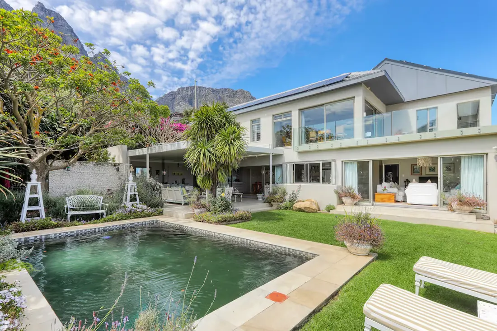
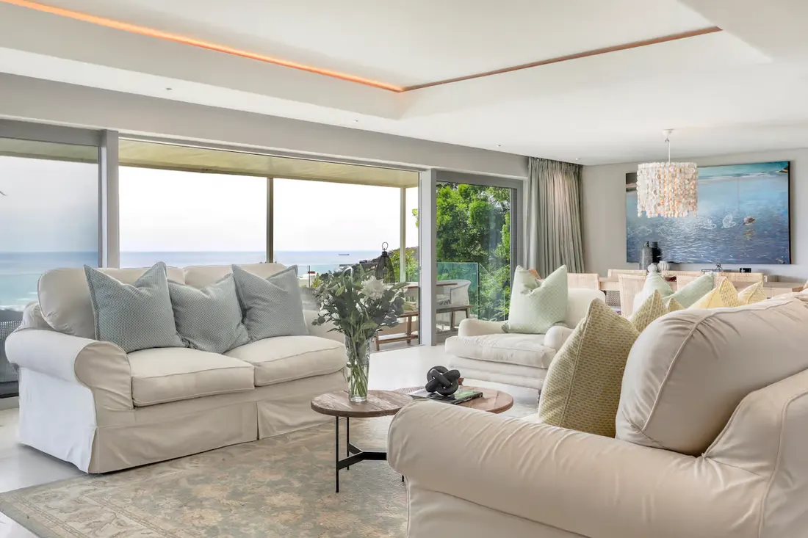
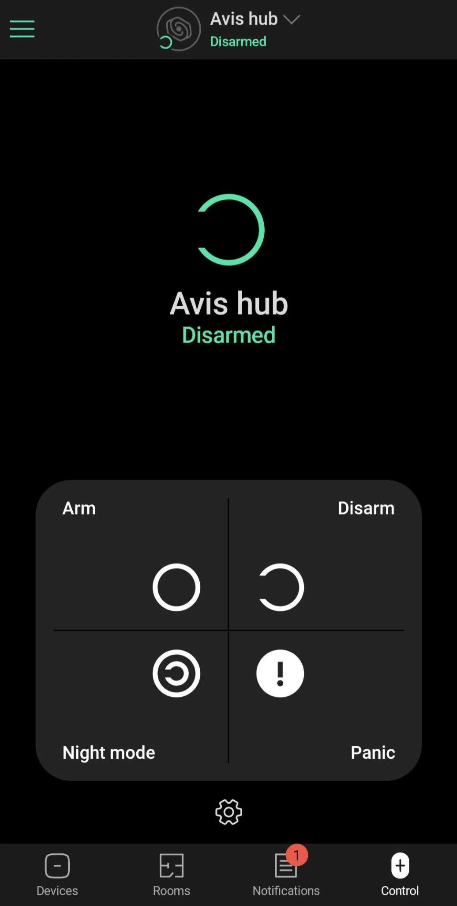
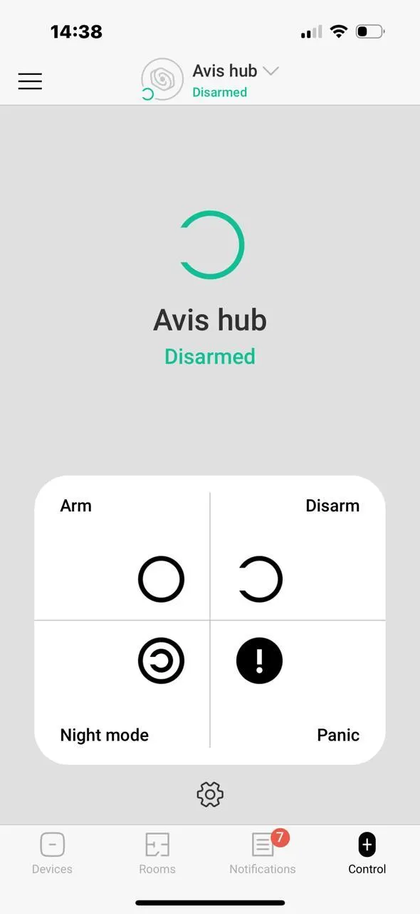
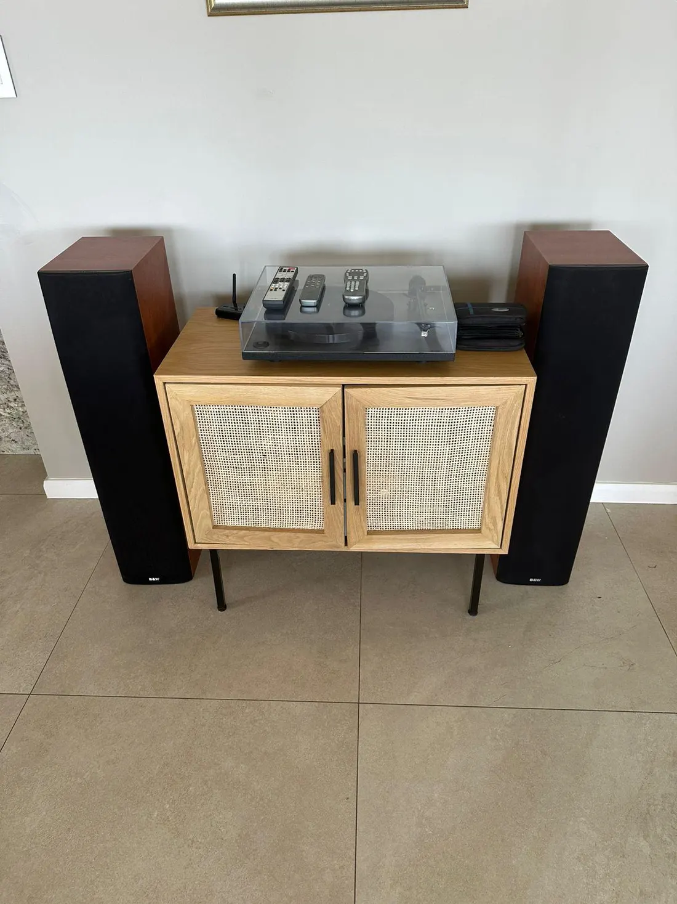
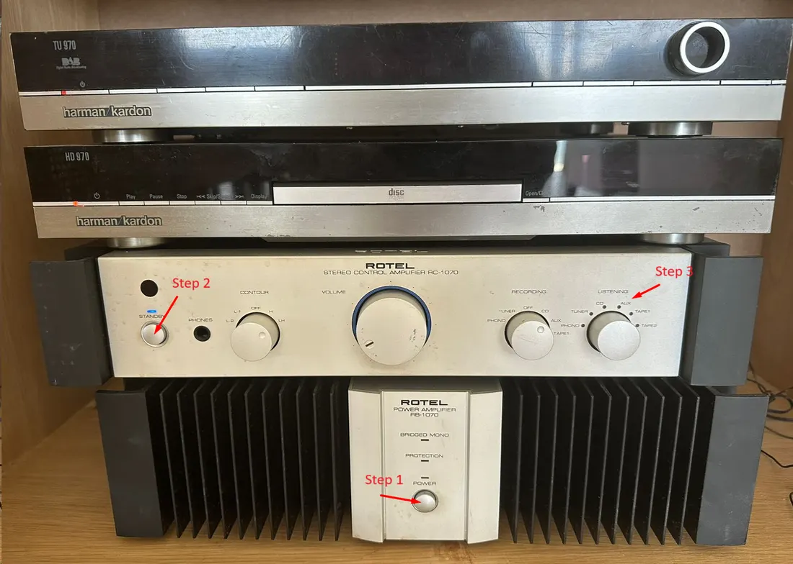
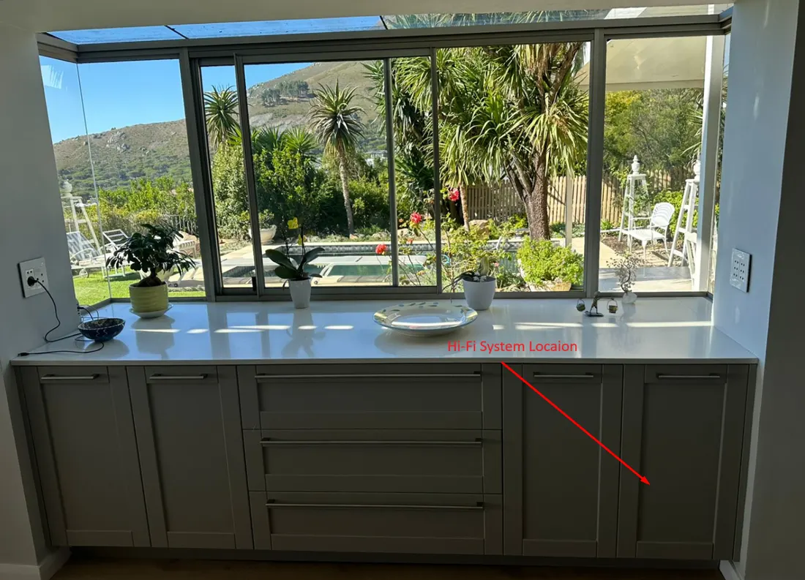
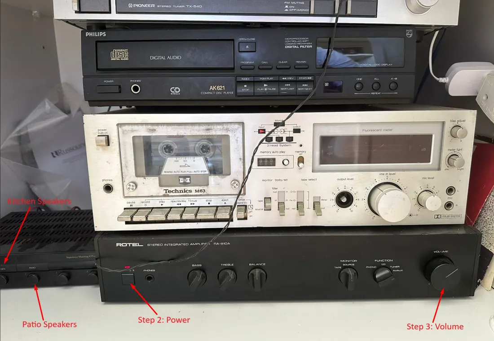
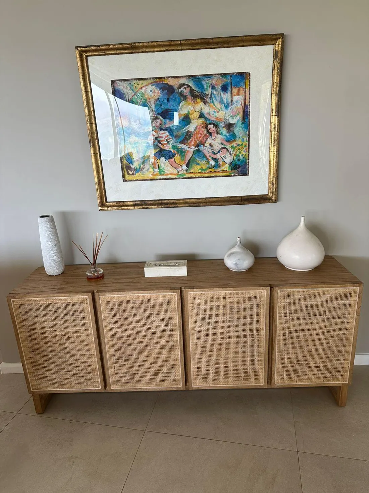

14 Cramond Road · Camps Bay · Cape Town · Western Cape
About the house
Wake up to the sound of waves and stunning ocean views at Everview. This
villa in Camps Bay features a private pool, covered terrace, and multiple
entertainment areas. Relax and enjoy the surrounding mountains and sea
from every angle.

The house from the garden
WiFi
The network name and password are on the printed card in the
house, beside this brochure. They are deliberately not printed
in any document that leaves the property. If you cannot find the card,
the property manager will read it to you.
The connection is fibre and reaches every level of the house. It stays up
through load-shedding on the house battery.
Arrival and departure
Check in
Check-in time from
2:00 PM
Check-in time is from 2pm until 7pm. If you are arriving on a late
flight please let the property manager know and arrange a check-in
time.
Check out
Check-out time by
10:00 AM
Check-out time is until 10am. If you have a late flight, please let the
property manager know and request a late check-out — subject to
availability and at an additional cost.
If you require late check-in or check-out, please coordinate with the
property manager in advance.

The formal living room
Before you go
Ensure all personal belongings are packed.
Sign in all keys to the property manager.
Log out of any personal accounts on TVs and streaming services.
House rules
No pets
As much as we love your fur babies, strictly no pets allowed.
No smoking
Strictly no smoking in the house or on the property.
No parties
No large parties or events are permitted. For small gatherings please
chat to the property manager about your plans.
Report any damages
If there has been any accidental damage, or something is not working,
please report it to the property manager immediately.
No unauthorised people
Strictly no unauthorised people who are not part of the booking group are
allowed on the property, without prior arrangement with the property
manager.
No commercial filming or photography
Commercial filming and photography is not permitted on the property.
Important to note
The owner of the property will not be held liable for any injuries that
may occur on the premises, including the swimming pool.
The kitchen
The kitchen is equipped with high-end appliances. Please note:
Use the chopping boards provided to protect the surfaces.
Please do not drag any items across the counter — lift items up and off it.
The ice machine is currently non-functional; staff will fill ice trays as needed.
Alarm and security
The villa is monitored 24/7 by ADT Security, with armed response.
The alarm account details and the property manager's direct
numbers are on the printed card in the house, with this
brochure — not in this document, for the same reason as the WiFi
password. The property manager sets the app up with you on arrival and
links the email addresses you want on the system.
The alarm system is controlled through the Ajax Security Systems app,
available on both Google Play (Android) and the App Store (Apple). Once
your account and devices have been activated, you can:
Arm — activates all internal and external security sensors.
Disarm — turns off all security sensors.
Night mode — activates external beams only, so you can move freely inside while the outside stays covered.
Panic button — immediately alerts ADT armed response, who dispatch security personnel to the property.
Important notes
Ensure all doors are securely closed before arming the alarm.
For any technical issue or support with the alarm system, contact the property manager on the number on the card in the house.
Alarm and security

The Ajax app — Android

The Ajax app — Apple
Lights
Garden lights, ramp lights, entrance and basement lights turn on
automatically at sundown, as well as a few internal lamps. Light switches
have been arranged logically, and all patios have external lights.
Emergency contacts
ADT Security
086 121 2300
Camps Bay Police Station
021 437 8140
Camps Bay Watch
021 438 2000
Police (national)
10111
Ambulance
10177
From a mobile phone
112
Property manager
On the card in the house
The house day to day
Housekeeping & laundry
Housekeeping services are available daily. Laundry can be done upon
request, with basic laundering provided. For high-value clothing,
professional services are recommended:
The villa is equipped with solar panels and a backup power supply. During
load-shedding, avoid high-energy appliances like the oven and the lift.
During the day this is not a problem, because the house is effectively
off the grid.
The house day to day
The lift
Capacity
The lift can safely accommodate up to 6 people.
Load-shedding considerations
The lift can be used during load-shedding, but only on sunny days when sufficient energy is being generated and the batteries are fully charged.
Do not use the lift on very overcast days or at night, as the batteries may not have enough power.
To check for load-shedding: listen for the neighbour's generator, which indicates load-shedding is active, and download the ESP app for an updated schedule.
If the lift stops
If the lift is used during load-shedding or when power is insufficient, it may trip the power.
The lift will then stop and slowly descend to the next level using gravity.
If it stops at the garden roof level, press B and the lift will continue descending to the basement.
This process is perfectly safe: the descent is slow and controlled.
Emergency assistance
If the lift stops, the telephone inside will automatically dial a 24/7 emergency number.
The emergency team will check whether anyone is stuck and, if necessary, dispatch a team to assist.
This has not occurred in the past six years.
Please exercise caution and ensure conditions are suitable before using the lift.
Use the Marantz remote (the large black and silver one).
Press the red button at the top left to turn the integrated amplifier on.
Adjust the volume with the up and down arrows — right-hand side, middle of the remote; black arrows on a white background.
The amplifier automatically switches off after 5 minutes of inactivity, as an energy-saving feature.
Turn on the TV
Use the LG remote.
Press the red button at the top left to turn on the LG OLED TV.
Access streaming services
Netflix — press the Netflix button, bottom left of the remote.
Amazon Prime — press the house button to open the content store, then scroll to the Amazon Prime icon with the arrows in the central portion of the remote. Alternatively use the toggle in the central circle to activate the red pointer, hover over the icon and press the central button.
Disney+ and other services — the same steps as Amazon Prime.
Return to TV or the home dashboard
Press the return button — the back arrow, above the Netflix button at the bottom left.
Select Recent, TV, or Home Dashboard.
In the Home Dashboard, select HDMI 4 to return to standard TV.
Need help?
If all else fails, ask a teenager. 🙂
Music systems
Formal dining area
The system includes a tuner, CD player, turntable and Bluetooth connector.
Turn on the Rotel power amplifier — press the central button to switch on the Rotel power amp.
Turn on the control amplifiers — press the top-left button to power on the control amplifiers.
Select AUX for Bluetooth — use the last button on the right to select the AUX input.
Connect — on your device, search for C36 and connect.
Enjoy your music using the tuner, CD player, turntable or Bluetooth.

The formal dining system

Steps 1–3 on the amplifier stack
Music systems
Kitchen & patio area
Locate the hi-fi — it is in the right-hand cupboard of the bay window cupboards in the kitchen.
Turn on the Rotel amplifier — press the left-hand button; a red indicator light shows it is powered.
Adjust the volume — the knob on the extreme right-hand side of the amplifier.
Select speakers — the unit to the left of the amplifier chooses them:
Kitchen and patio: press both left-hand buttons in.
Kitchen only: push the patio button out.
Patio only: push the kitchen button out.
Improve Bluetooth range — leave your phone on the kitchen counter, so you can still control the volume from the patio.
Connect — select OFA Music Receiver from your device's Bluetooth list.

The bay window cupboards

Power, speakers and volume
Board games
Board games
The cabinet in the lounge, beneath the gold-framed painting, houses a
wide selection of board games for your enjoyment. We kindly ask that you
return the games to their original condition and pack them back neatly as
you found them.

The cabinet beneath the painting
Camps Bay
Getting around
Camps Bay Beach
4 min drive · 20 min walk · 1.6 km
Camps Bay restaurant strip
4 min drive · 19 min walk · 1.5 km
Table Mountain cable car
8 min drive · 4.2 km
Cape Town city centre
12 min drive · 6.3 km
V&A Waterfront
15 min drive · 6.9 km
Cape Town International
30–45 min drive · 25 km
Times are off-peak. The Waterfront, the city centre and the airport all
take considerably longer in the late-afternoon peak.
Restaurants nearby
Camps Bay Retreat
3 min drive · 1.4 km
Codfather Seafood & Sushi
3 min drive · 1.4 km
The Hussar Grill Camps Bay
3 min drive · 1.7 km
Paranga Restaurant
4 min drive · 1.6 km
The Roundhouse Restaurant
8 min drive · 3.3 km
Azure Restaurant
9 min drive · 5.6 km
Everview · 14 Cramond Road, Camps Bay, Cape Town 8005
Welcome brochure v4. The WiFi password, the alarm account details and the
property manager's direct numbers are on the printed card in the house,
and are never printed in a document that leaves the property.